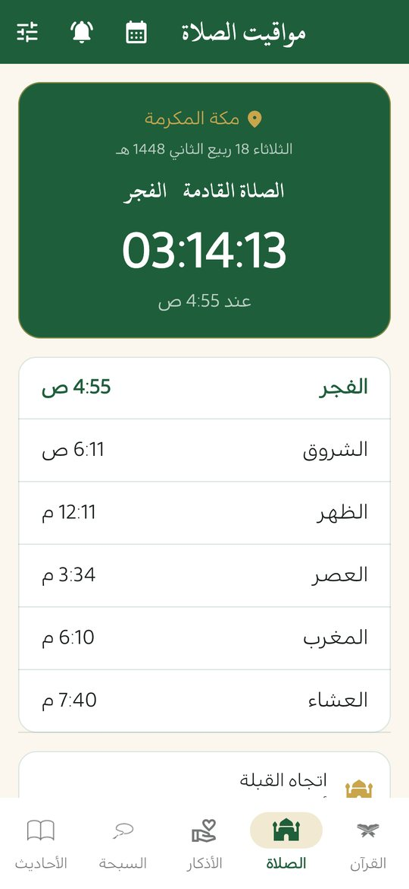

مواقيت الصلاة واتجاه القبلة بدون إنترنت
تحسب «منهج حياة» مواقيت الصلاة على هاتفك نفسه، فلا تحتاج إنترنت ولا يُرسل موقعك إلى أحد. تنبيه عند دخول كل وقت بصوت الأذان الذي تختاره، وعدّ تنازلي للصلاة القادمة، وبوصلة للقبلة.
ملف APK لأندرويد 7.0 فأحدث · مجاني · دون إعلانات

مواقيت تُحسب على هاتفك
تُحسب المواقيت داخل التطبيق دون اتصال، من موقعك التقريبي أو من قائمة مدن تختار منها إن لم ترغب بمنح إذن الموقع.
- عدّ تنازلي للصلاة القادمة ووقتها.
- اختيار طريقة الحساب: رابطة العالم الإسلامي، وأم القرى، والهيئة المصرية العامة، والأردن، ودبي، ودول الخليج، والكويت وغيرها.
- اختيار المذهب في العصر (الشافعي أو الحنفي).
تنبيهات في وقتها
- تنبيه عند دخول وقت كل صلاة، وتذكير قبلها بدقائق.
- صوت الأذان تختاره من أصوات هاتفك، أو تستورد ملفاً صوتياً بنفسك.
- تذكير بأذكار الصباح والمساء، وبوردك اليومي إن لم يكتمل.
- تذكير يوم الجمعة بسورة الكهف (يفتحها مباشرة) وبالدعاء في آخر ساعة قبل المغرب.
- تبقى التنبيهات مجدولة بعد إعادة تشغيل الهاتف.
تُجدول التنبيهات على هاتفك محلياً ولا تمرّ عبر أي خادم. قد يطلب منك أندرويد السماح بالمنبّهات الدقيقة كي يصل التنبيه في وقته بالضبط.
بوصلة القبلة
تستخدم البوصلة حساسات هاتفك لتخبرك باتجاه القبلة وبالدرجات، حتى تتجه إليها.
ودجت للشاشة الرئيسية
أضف ودجت «منهج حياة» إلى الشاشة الرئيسية في أندرويد فتعرض الصلاة القادمة ووقتها ومواقيت اليوم، ويتحدّث تلقائياً عند كل صلاة. لإضافته: اضغط مطوّلاً على الشاشة الرئيسية ثم «الودجت» ثم «منهج حياة».
التقويم الهجري والأيام الفاضلة
التقويم الهجري وفق تقويم أم القرى مع إمكانية تعديله يوماً أو يومين، وتقويم شهري يعرض التاريخين الهجري والميلادي معاً ويميّز الأيام الفاضلة: عرفة، وعاشوراء، والأيام البيض، والاثنين والخميس، والست من شوال، والعشر من ذي الحجة، مع مراعاة أيام العيد والتشريق.

أسئلة شائعة
هل تعمل مواقيت الصلاة بدون إنترنت؟
نعم. تُحسب المواقيت على الهاتف نفسه دون اتصال بالإنترنت.
هل يحتاج التطبيق إلى موقعي؟
الأمر اختياري. إن سمحت به يُستخدم موقعك التقريبي على الهاتف فقط لحساب المواقيت والقبلة ولا يُرسل إلى أي جهة. ويمكنك بدلاً من ذلك اختيار مدينتك من القائمة.
لماذا قد تختلف المواقيت بدقائق عن تقويم بلدي؟
لأن الجهات المختلفة تعتمد طرق حساب مختلفة. اختر من الإعدادات الطريقة المعتمدة في بلدك.
هل يمكن تغيير صوت الأذان؟
نعم، تختار صوتاً من أصوات هاتفك أو تستورد ملفاً صوتياً تحبه ليُسمع مع تنبيه الصلاة.
اقرأ أيضاً
حمّل منهج حياة مجاناً
القرآن والصلاة والذكر في تطبيق واحد، دون إعلانات ودون حساب.